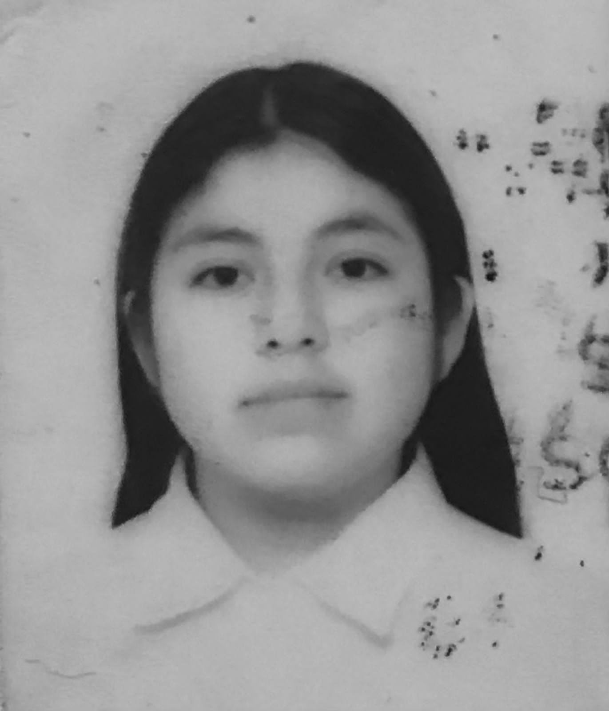

Mi nombre es Pamela Hernández Díaz, nací el día 20 de septiembre del año 2007. Actualmente vivo en la comunidad de Dolores Amarillas, ubicada en el municipio de Jiquipilco, Estado de México. Mis padres son Emilio Hernández Martínez y Cristina Díaz García. Tengo tres hermanos: la mayor se llama Jenifer Hernández Díaz, mi hermano se llama Gilberto Hernández Díaz y mi hermana pequeña se llama Vianey Hernández Díaz.En el año 2011 ingresé al "Jardín de niños General Anaya". Para el año 2013 ingresé a la primaria "Amado Nervo" y en el año 2019 entré a la secundaria "0912 Dolores Hidalgo". En el año 2021 ingresé a la Escuela Preparatoria Oficial "EPO 176", ubicada en la comunidad de San Bartolo del Llano, perteneciente al municipio de Ixtlahuaca. Actualmente me encuentro cursando el sexto semestre.
 visitar red social visitar